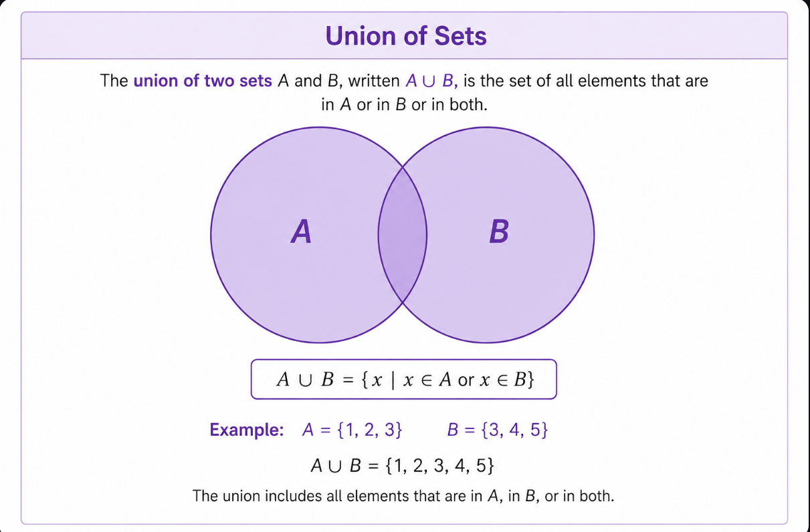
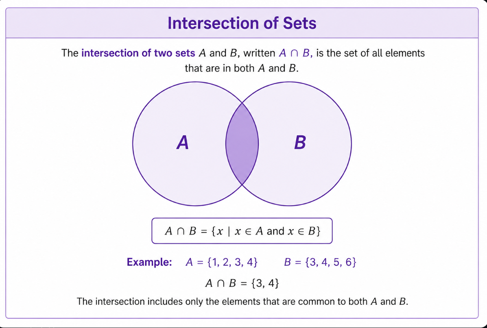
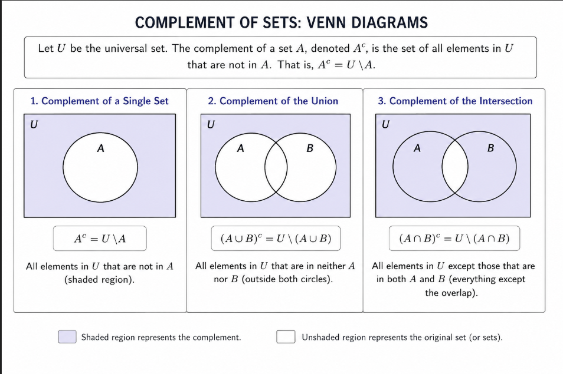
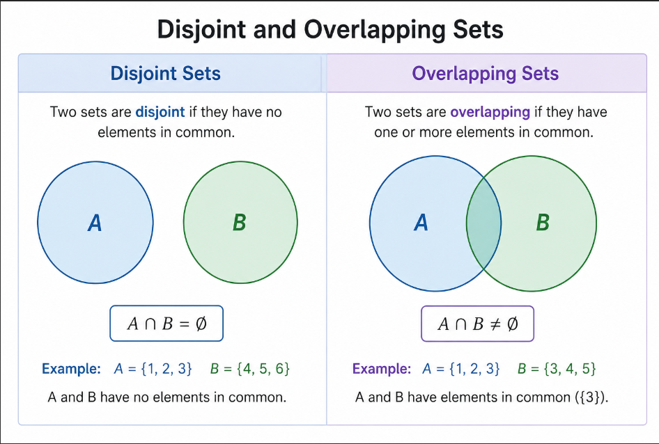

Sets
A set is a well-defined collection of distinct objects. It is represented by a capital letter. The number of elements in a finite set is known as the cardinal number of a set.
Commonly Used Sets
- N : Set of all natural numbers
- Z : Set of all integers
- Q : Set of all rational numbers
- R : Set of all real numbers
- Z+ : Set of all positive integers
Representation of Sets
The elements in a set can be represented in Statement Form, Roster Form, or Set Builder Form.
Statement Form
In statement form, the well-defined descriptions of the members of a set are written and enclosed within curly brackets.
Example: The set of even numbers less than 15.
Roster Form
In roster form, all the elements of a set are listed.
Natural Numbers less than 5:
{1, 2, 3, 4}
Set Builder Form
The general form is: A = { x : property }
Example: A = {2, 4, 6, 8}
Given set in set-builder form:
A = {x : x = 2n, n ∈ N and 1 ≤ n ≤ 4}
Union of Sets

If set A and set B are two sets, then A union B is the set that contains all the elements of set A and set B. It is denoted as A ∪ B.
Intersection of Sets

If set A and set B are two sets, then A intersection B is the set that contains only the common elements between set A and set B. It is denoted as A ∩ B.
Since A and B do not have any elements in common, their intersection is the null set.
Complement of Sets

The complement of any set, say P, is the set of all elements in the universal set that are not in set P. It is denoted by P'.
Disjoint and Overlapping Sets

Disjoint Sets Formula: Disjoint sets have no common elements. Therefore, the number of elements in their union is the sum of the elements in each set.
Overlapping Sets Formula: Overlapping sets have some common elements. To avoid counting the common elements twice, subtract the intersection from the sum.


Data Analysis
Grade 8 Media Preference Survey
Our group conducted a survey across four sections of Grade 8—namely Class 8A, 8B, 8C, and 8D—covering a total sample size of 152 students to explore their interest in Anime (A), Movies (M), and Series (S).
Venn Diagram Data Table
Representing information in Venn diagram
Survey Analysis
We analyzed the data from the survey. Our group survey and analysis looked at what 152 eighth-grade students watch. We collected data from four classes (8A, 8B, 8C, and 8D) about Anime, Movies, and Series.
We found out that Movies are the most popular choice with 76 viewers, and Anime is a close second with 73 viewers. Series came in last with 67 viewers. While many students only like one specific type, a big group of 21 students love to watch all three. On the other hand, there are 25 students who do not watch any of them at all.
Overall, our study shows that most eighth graders love watching videos in their free time, especially movies and anime, and many enjoy switching between different types of shows.